Portfolio
A comprehensive repository of project portfolio categorized by technical domain.
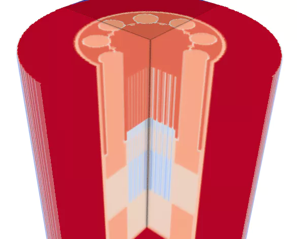
Micro Reactor Heat Pipe (MRHP)
This project analyzed a novel reactor using Uranium Carbide fuel using OpenMC, resulting in 11.1 % enrichment, a -2.0084 pcm/K temperature reactivity coefficient, and a 2.07 power peaking factor.
View Details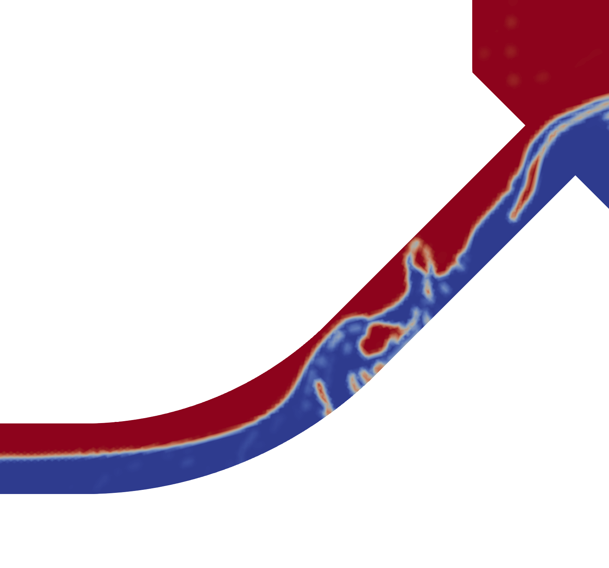
Two-phase Turbulent CFD in Nuclear Reactor
This multi-platform project utilized gmsh, OpenFOAM's interFoam, ParaView, and Python to simulate and quantitatively analyze turbulent two-phase fluid dynamics, validated against experimental data.
View Details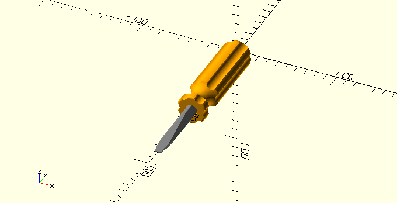
Diesel Screwdriver CAD Modeling
Using OpenSCAD, this project modeled the Tier 5 "Diesel Screwdriver" from TooTallToby competition, calculating its mass via FreeCAD to achieve a highly accurate 202.59775 g final model with just 0.0011 % error.
View Details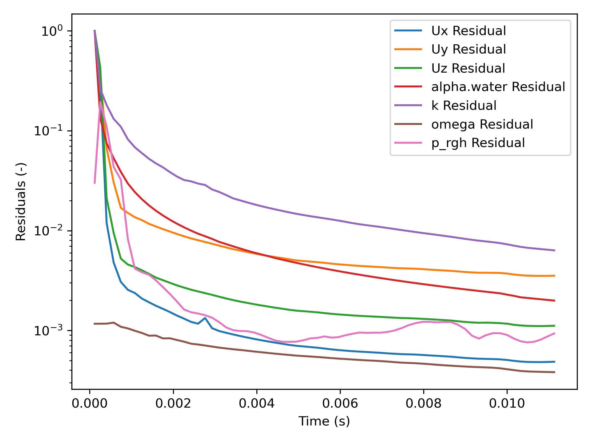
openFoamEvaluation
A Python script that automates OpenFOAM log analysis using regular expressions, extracting simulation data into a CSV file and generating matplotlib line graphs to evaluate convergence and stability.
View Details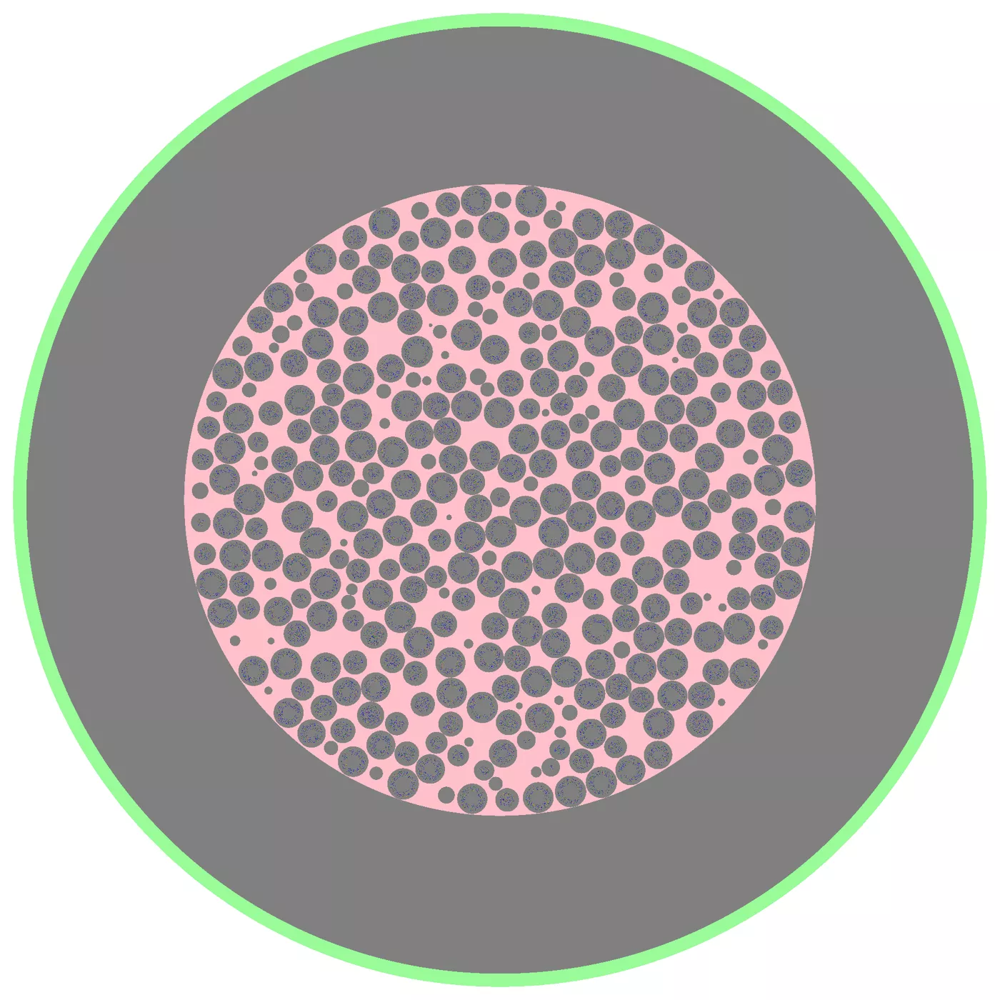
Fluoride Salt-Cooled High Temperature Reactor
This project modeled a simplified pebble bed reactor core with TRISO fuel using OpenMC, successfully conducting a preliminary criticality study on the advanced fluoride salt-cooled high-temperature reactor.
View Details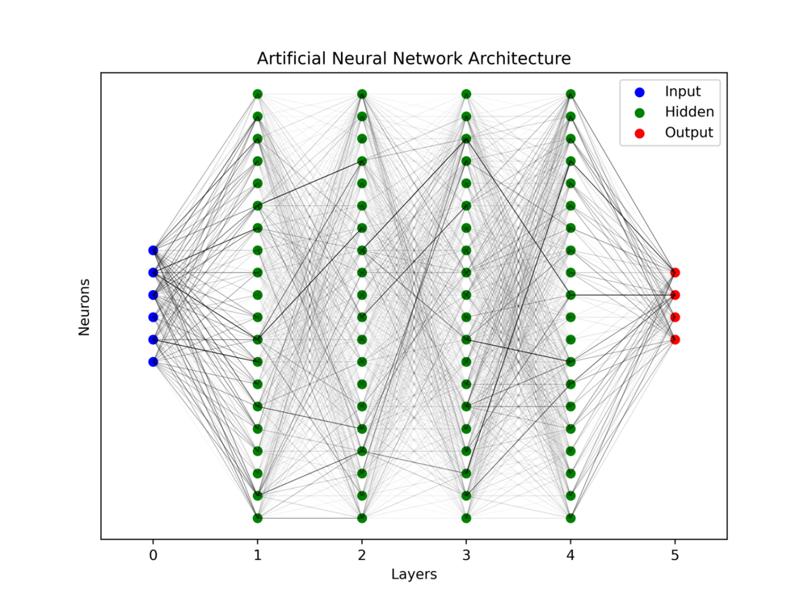
ann-splitter: an Artificial Neural Network Pipeline
Featuring two interconnected Python scripts, ann-splitter is an MLP neural network pipeline using TensorFlow and scikit-learn that automates data partitioning, visualizes loss curves, and rigorously audits predictive performance via R2 and RMSE metrics.
View Details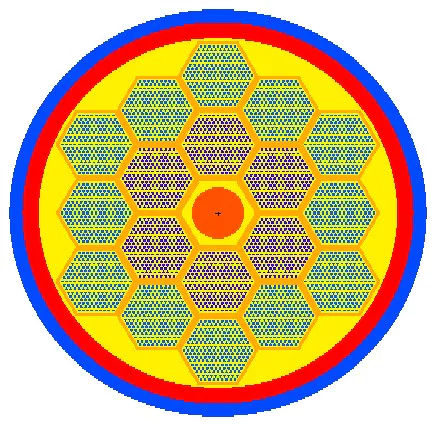
Super-Safe Small and Simple (4S) Reactor
This MCNPX simulation of Toshiba's 4S sodium fast reactor yielded a critical keff of 1.00264, a negative Doppler coefficient of -7.4187 × 10-4, and confirmed successful modeling with safe reactivity margins.
View Details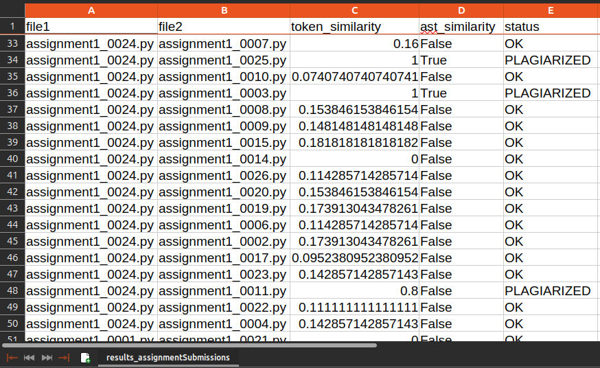
codePlagiarismCheck: Python Assignment Plagiarism Protocol
This Python plagiarism detection tool utilizes ast and difflib to analyze structural similarities in code submissions, successfully catching copied logic even when variables are renamed or formatting is altered.
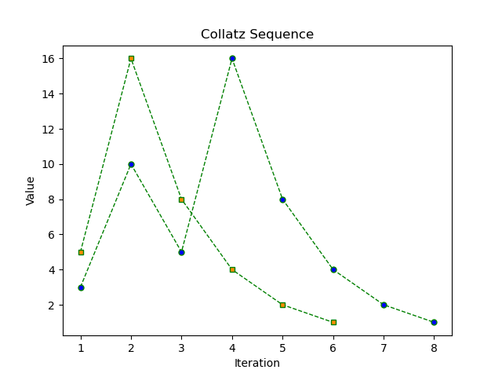
Project Euler
This portfolio features programming solutions for Project Euler's math challenges, bridging advanced mathematical theory with optimized, highly performant computational algorithms to demonstrate analytical rigor and logical problem-solving in software development.
View Details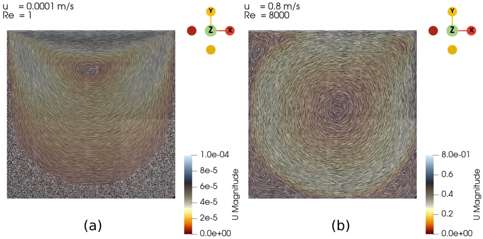
Lid-Driven Cavity Using OpenFOAM
This OpenFOAM CFD study simulated a 2D lid-driven cavity across Reynolds numbers from 1 to 8000, successfully validating flow transitions and eddy formations against Kuhlmann et al.’s benchmark research.
View Details
Toy Ball for Structure CAD Modeling
Using OpenSCAD, this project modeled the Tier 4 "Toy Ball for Structure" from TooTallToby competition, calculating its mass via FreeCAD to achieve a highly accurate 63.34197 g final model with just 0.0284 % error.
View Details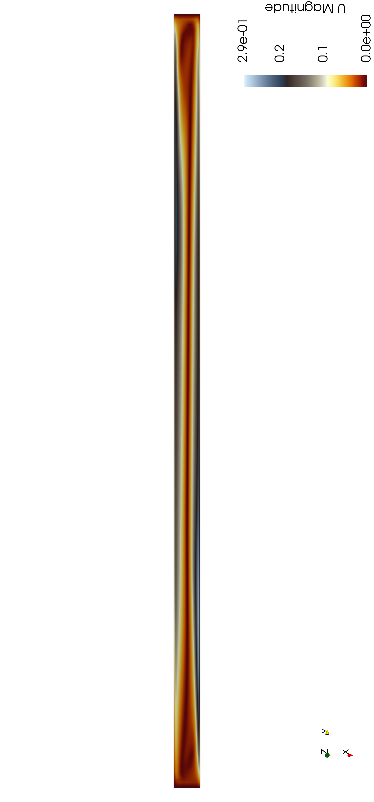
Temperature-Driven Cavity using OpenFOAM
Reproducing Betts and Bokhari’s study, this project used OpenFOAM’s buoyantSimpleFoam to model steady-state turbulent natural convection in a tall cavity, successfully validating temperature-driven vortex formation and velocity profiles against experimental data.
View Details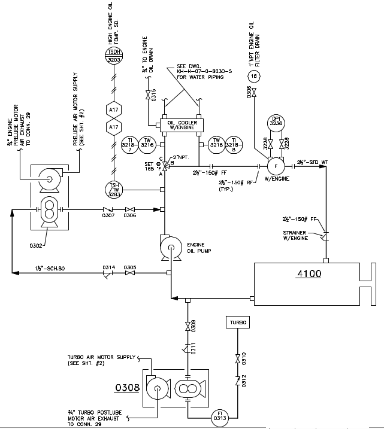
Gas Lift Compression P&ID Walktrhough
This project features a video walkthrough of a P&ID, focusing on the Engine Lube Oil Conditioning and Gas Circulation Loop's mechanical sequencing and thermodynamic regulation.
View Details